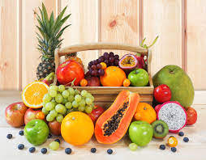

Mini Market O.P
Somos un equipo que busca lo mejor para ti y los tuyos, con la mejor calidad ofrecemos frutas y verduras traidas directamente del campo sin intermediaros,a su vez contamos con una amplia variedad de víveres.
En Mini Market O.P pensamos en tu comodidad
Es por ello, que encuentras todo lo que necesitas en un solo lugar, con la comodidad de un ambiente sano y una atención de calidad.


Aquí encontraras varias recetas que te servirán de insiración
Servicios
Mejora tu calidad de compra con la amplia variedad de servcios que ofrecemos.
Atención de calidad
Aquí podrás contar con una excelente atención al cliente, nuestro personal está capacitado para ayudarte a encontrar lo que buscas de manera eficiente y rápida.
Para asegurarnos de esto, puedes entrar a nuestro sitio web y calficar su atención hacia ti.
Venta de frutas, verduras y vegetales
Nuestra amplia variedad de frutas y vegetales te permitiran hacer de tus platos una maravilla culinaria, ya sea que tengas conocimientos o no en la cocina, las frutas y vegetales que ofrecemos para ti son traídas directamente del campo y sin intermediarios, lo cual preserva su frescura.
Con lo cual, si tienes dones en el arte culinario, tus recetas estarán hechas con amor y calidad.
Por otra parte, si lo tuyo no es cocinar y solo haces lo necesario, puedes estar tranquilo, las recetas sencillas con alimentos de calidad también quedan delciosas.
Venta de Víveres
Complementamos tu compra con una excelente variedad de víveres.
Los productos locales e importados hacen parte de nuestro catálago de ventas.
Busca en nuestro menú, la pestaña de "productos", allí encontrarás toda la disponibilidad.
Venta de productos de limpieza e higiene personal
Para el cuidado de tu hogar y para tu uso personal.
Guía de compra online
Te horientamos en tus compras, te ofrecemos ideas, inspiración y conocimientos para que tomes las mejores deciones al momento de realizar tus compras por internet.
La consigues en el menú, la pestaña de "Guía de compra".
Delivery
¡Working progress!
Guía de Compra
Para que puedas comprar con conocimiento y seguridad, te brindamos una guía de compra que te servirá como referencia, en ella podrás encontrar: definiciones, recetas, inspiración e ideas, y tips de compras.
Definiciones:
Recetas:
Inspiración e ideas:
Tips de compras:
Programa de afiliación
El programa de afiliación te brinda la oportunidad de ser parte del eqipo Market O.P.
Tiene beneficios tales como, encontrar ofertas, asesoria personalizada, acumulación de puntos canjeables, entre otras cosas.
No te pierdas la oportunidad y ¡registrate ya!